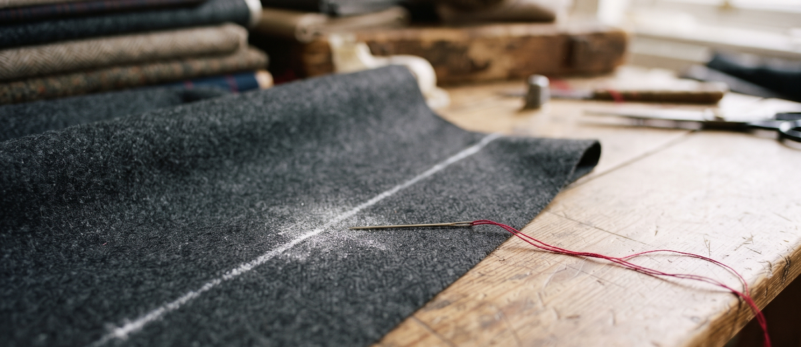

The Alteration Bench. Given a known vulnerability and a codebase, this tool marks the lines that may need remediation and writes them into a patch file. Like chalk on suiting, the marks come first; a default run cuts nothing.

| Option | What the README records |
|---|---|
--vulnerability_id | No description provided. |
--codebase_path | The path to the codebase to scan. |
--output_patch_path | The path to save the generated patch file. The entry in the source breaks off at the words "Defaults to", with no default value shown. |
--apply | Apply code changing patches to the files in place, per file from the highest line number down. |
--approval_required | With --apply, ask before applying each patch. Has no effect without --apply. |
--exploit_db_url | The base URL of the Exploit Database to use for vulnerability information. |
-h | Show help message and exit. |
The scan fetches the search page for the vulnerability ID from the database base URL given, takes the text of the first cell of the first table on that page as the description, splits that text into keywords, and lists every line containing one of those keywords. ast.parse is used only to confirm a file parses, not to match blocks.
--apply applies the code changing patches in place, per file from the highest line number down.os.system and pickle.load warnings, change no code: they are written to the patch file as manual steps, are never auto applied, and are logged as manual steps, not as applied fixes.--approval_required has no effect without --apply.--vulnerability_id arrives with no description provided, and the --output_patch_path entry breaks off before its default value; neither gap is filled in here.